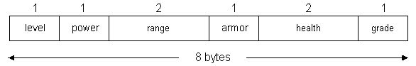
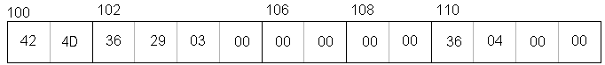

Suppose we want to parse simple expressions and we need to store information about each symbol in the expression. We could use a structure like this:
enum Kind {OPERATOR, INTEGER, FLOAT, IDENTIFIER};
struct Symbol
{
enum Kind kind;
char op;
int ival;
float fval;
char id;
};
What will be printed out by the following code? Assume a 32-bit computer with 4-byte integers and pointers.
struct Symbol sym1;
printf("sizeof(sym1.kind) = %i\n", sizeof(sym1.kind));
printf("sizeof(sym1.op) = %i\n", sizeof(sym1.op));
printf("sizeof(sym1.ival) = %i\n", sizeof(sym1.ival));
printf("sizeof(sym1.fval) = %i\n", sizeof(sym1.fval));
printf("sizeof(sym1.id) = %i\n", sizeof(sym1.id));
printf("sizeof(sym1) = %i\n", sizeof(sym1));
Butsizeof(sym1.kind) = 4 sizeof(sym1.op) = 1 sizeof(sym1.ival) = 4 sizeof(sym1.fval) = 4 sizeof(sym1.id) = 1 sizeof(sym1) = 20
What's going on?4 + 1 + 4 + 4 + 1 != 20
which is 20 bytes in size because all data is aligned on 4-byte boundaries. This means that the char data is actually padded with 3 bytes extra so the data that follows will be aligned properly. (Note the term "follows").
To change the structure alignment, use this compiler directive:
where n is the alignment. The n specifies the value, in bytes, to be used for packing. In Microsoft Visual Studio, for example, the default value for n is 8. Valid values are 1, 2, 4, 8, and 16. Some compilers let you set the alignment for all structures with a command line option.#pragma pack(n)
For example, to align the fields of the Symbol structure on 2-byte boundaries:Important! The alignment of a member will be on a boundary that is either a multiple of n or a multiple of the size of the member, whichever is smaller.
#pragma pack(2) /* align on 2-byte boundaries */
struct Symbol
{
enum Kind kind;
char op;
int ival;
float fval;
char id;
};
#pragma pack() /* restore compiler's default alignment setting */
To align the fields on 1-byte boundaries:
#pragma pack(1) /* align on 1-byte boundaries */
struct Symbol
{
enum Kind kind;
char op;
int ival;
float fval;
char id;
};
#pragma pack() /* restore compiler's alignment setting */
An actual printout from GNU's gcc compiler:
#pragma pack(4) #pragma pack(2) #pragma pack(1)
--------------------------------------------------------------------------------
&sym1 = 0xffa9e0ec &sym1 = 0xffc5fe70 &sym1 = 0xffc7d792
&sym1.kind = 0xffa9e0ec &sym1.kind = 0xffc5fe70 &sym1.kind = 0xffc7d792
&sym1.op = 0xffa9e0f0 &sym1.op = 0xffc5fe74 &sym1.op = 0xffc7d796
&sym1.ival = 0xffa9e0f4 &sym1.ival = 0xffc5fe76 &sym1.ival = 0xffc7d797
&sym1.fval = 0xffa9e0f8 &sym1.fval = 0xffc5fe7a &sym1.fval = 0xffc7d79b
&sym1.id = 0xffa9e0fc &sym1.id = 0xffc5fe7e &sym1.id = 0xffc7d79f
sizeof(sym1.kind) = 4 sizeof(sym1.kind) = 4 sizeof(sym1.kind) = 4
sizeof(sym1.op) = 1 sizeof(sym1.op) = 1 sizeof(sym1.op) = 1
sizeof(sym1.ival) = 4 sizeof(sym1.ival) = 4 sizeof(sym1.ival) = 4
sizeof(sym1.fval) = 4 sizeof(sym1.fval) = 4 sizeof(sym1.fval) = 4
sizeof(sym1.id) = 1 sizeof(sym1.id) = 1 sizeof(sym1.id) = 1
sizeof(sym1) = 20 sizeof(sym1) = 16 sizeof(sym1) = 14
#pragma pack(4) #pragma pack(2) #pragma pack(1)
--------------------------------------------------------------------------------
&sym1 = 0012FEDC &sym1 = 0012FEE0 &sym1 = 0012FEE0
&sym1.kind = 0012FEDC &sym1.kind = 0012FEE0 &sym1.kind = 0012FEE0
&sym1.op = 0012FEE0 &sym1.op = 0012FEE4 &sym1.op = 0012FEE4
&sym1.ival = 0012FEE4 &sym1.ival = 0012FEE6 &sym1.ival = 0012FEE5
&sym1.fval = 0012FEE8 &sym1.fval = 0012FEEA &sym1.fval = 0012FEE9
&sym1.id = 0012FEEC &sym1.id = 0012FEEE &sym1.id = 0012FEED
sizeof(sym1.kind) = 4 sizeof(sym1.kind) = 4 sizeof(sym1.kind) = 4
sizeof(sym1.op) = 1 sizeof(sym1.op) = 1 sizeof(sym1.op) = 1
sizeof(sym1.ival) = 4 sizeof(sym1.ival) = 4 sizeof(sym1.ival) = 4
sizeof(sym1.fval) = 4 sizeof(sym1.fval) = 4 sizeof(sym1.fval) = 4
sizeof(sym1.id) = 1 sizeof(sym1.id) = 1 sizeof(sym1.id) = 1
sizeof(sym1) = 20 sizeof(sym1) = 16 sizeof(sym1) = 14
struct Symbol sym1;
printf("&sym1 = %p\n", (void *)&sym1);
printf("&sym1.kind = %p\n", (void *)&sym1.kind);
printf("&sym1.op = %p\n", (void *)&sym1.op);
printf("&sym1.ival = %p\n", (void *)&sym1.ival);
printf("&sym1.fval = %p\n", (void *)&sym1.fval);
printf("&sym1.id = %p\n", (void *)&sym1.id);
the layout would still look like this:#pragma pack(4) /* align on 4-byte boundaries */ #pragma pack(8) /* align on 8-byte boundaries */ #pragma pack(16) /* align on 16-byte boundaries */
This is because none of the members of the structure are larger than 4 bytes (so they will never need to be aligned on 8-byte or 16-byte boundaries.) If you really need more padding between members, you have to add it manually like this:
struct MyStruct
{
char a; /* size is 1 byte */
char dummy1[3]; /* force 3 bytes of padding */
char c; /* size is 1 byte */
char dummy2[3]; /* force 3 bytes of padding */
};
Notes:
Pragmas are not part of the ANSI C language and are compiler-dependent. Although most compilers support the pack pragma, you should be aware that different compilers may have different default alignments. Also, MS says that the default alignment for Win32 is 8 bytes, not 4. You should consult the documentation for your compiler to determine the behavior.
This is from the top of stdlib.h from MS VC++ (older 32-bit version):
64-bit versions of Visual Studio default to 16-byte alignment.#ifdef _MSC_VER /* * Currently, all MS C compilers for Win32 platforms default to 8 byte * alignment. */ #pragma pack(push,8)
Given these two logically equivalent structures, what are the ramifications of laying out the members in these ways? In other words, what is sizeof each structure?
struct BEAVIS { char a; double b; char c; double d; char e; double f; char g; double h; };struct BUTTHEAD { char a; char c; char e; char g; double b; double d; double f; double h; };
Structure packing with GNU compilers
Compiler option for alignment for Microsoft compilers.
Note: Structure alignment is compiler-dependent and varies between 32-bit and 64-bit compilers. You must check the documentation for the compiler that you are using to see exactly how it's done. These examples on this page were done using Microsoft's 32-bit compiler (unless otherwise noted). Running these examples with a different compiler may yield different results. Here's a synopsis of the differences.
Accessing Structures Using Pointer/Offset
Much like arrays, the compiler converts structure.member notation into pointer + offset notation:So using the Symbol structure example above with the address of sym1 being 100:structvar.member ==> *([address of structvar] + [offset of member])
Or more accurately:struct Symbol sym1; sym1.ival ==> *(&sym1 + 8) sym1.id ==> *(&sym1 + 16)
Note that the code above assumes structures are aligned on 4-byte boundaries:sym1.ival ==> *( (int *)( (char *)&sym1 + 8) ) sym1.id ==> *( (char *)&sym1 + 16 )
Code to print the values of a Symbol structure variable using pointer/offset with 4-byte alignment:
TestStructOffset4(void)
{
struct Symbol sym1 = {IDENTIFIER, '+', 123, 3.14F, 'A'};
char *psym = (char *)&sym1;
int kind = *((int *)(psym + 0)); /* 3 */
char op = *(psym + 4); /* '+' */
int ival = *((int *)(psym + 8)); /* 123 */
float fval = *((float *)(psym + 12)); /* 3.14 */
char id = *(psym + 16); /* 'A' */
/* 3, +, 123, 3.140000, A */
printf("%i, %c, %i, %f, %c\n", kind, op, ival, fval, id);
}
Code to print the values of a Symbol structure variable using pointer/offset with 1-byte alignment:
TestStructOffset1(void)
{
struct Symbol sym1 = {IDENTIFIER, '+', 123, 3.14F, 'A'};
char *psym = (char *)&sym1;
int kind = *((int *)(psym + 0)); /* 3 */
char op = *(psym + 4); /* '+' */
int ival = *((int *)(psym + 5)); /* 123 */
float fval = *((float *)(psym + 9)); /* 3.14 */
char id = *(psym + 13); /* 'A' */
/* 3, +, 123, 3.140000, A */
printf("%i, %c, %i, %f, %c\n", kind, op, ival, fval, id);
}
Given the sizes of each data type, we could say that the minimum amount of memory required to hold these attributes is 8 bytes. However, given a 32-bit computer, it's possible that the amount of memory required could actually be 24 bytes, depending on where these variables exist./* Variables for each attribute of some object */ /* Comments represent the range of values for the attribute */ unsigned char level; /* 0 - 3 */ unsigned char power; /* 0 - 63 */ unsigned short range; /* 0 - 1023 */ unsigned char armor; /* 0 - 15 */ unsigned short health; /* 0 - 511 */ unsigned char grade; /* 0 - 1 */
Declared local to a function: (on the stack)
Microsoft GNU Borland
Declared globally:
Microsoft GNU Borland
Our first attempt to save memory is to put them in a structure:
/* Put into a struct */
typedef struct
{
unsigned char level; /* 0 - 3 */
unsigned char power; /* 0 - 63 */
unsigned short range; /* 0 - 1023 */
unsigned char armor; /* 0 - 15 */
unsigned short health; /* 0 - 511 */
unsigned char grade; /* 0 - 1 */
}ENTITY_ATTRS;
What is the memory requirements for this struct? Of course, it depends on how the compiler is packing structures. Given a default pack value of 8, the layout looks like this:
What about this structure:
/* Put into a struct and pack */
#pragma pack(1) /* align on 1-byte boundaries */
typedef struct
{
unsigned char level; /* 0 - 3 */
unsigned char power; /* 0 - 63 */
unsigned short range; /* 0 - 1023 */
unsigned char armor; /* 0 - 15 */
unsigned short health; /* 0 - 511 */
unsigned char grade; /* 0 - 1 */
}ENTITY_ATTRS;
#pragma pack()

Of course, looking closer, we realize that we only need 32 bits for all 6 variables, so we'll just use an unsigned integer to store the values:
To set the fields to these values:
We can use "simple" bit manipulation:level = 3; /* 2 bits wide */ power = 32; /* 6 bits wide */ range = 1000; /* 10 bits wide */ armor = 7; /* 4 bits wide */ health = 300; /* 9 bits wide */ grade = 1; /* 1 bit wide */
After shifting, we OR all of the values together:unsigned int attrs; attrs = 3 << 30; /* set level to 3 */ attrs = attrs | (32 << 24); /* set power to 32 */ attrs = attrs | (1000 << 14); /* set range to 1000 */ attrs = attrs | (7 << 10); /* set armor to 7 */ attrs = attrs | (300 << 1); /* set health to 300 */ attrs = attrs | 1; /* set grade to 1 */
Left shifts Binary
-----------------------------------------------
3 << 30 11000000000000000000000000000000
32 << 24 100000000000000000000000000000
1000 << 14 111110100000000000000000
7 << 10 01110000000000
300 << 1 1001011000
1 1
-----------------------------------------------
11100000111110100001111001011001
/* Use bitfields for the attributes */
typedef struct
{
unsigned int level : 2; /* 0 - 3 */
unsigned int power : 6; /* 0 - 63 */
unsigned int range : 10; /* 0 - 1023 */
unsigned int armor : 4; /* 0 - 15 */
unsigned int health : 9; /* 0 - 511 */
unsigned int grade : 1; /* 0 - 1 */
}ENTITY_ATTRS_B;
Much like a lot of syntax in C, the compiler is doing the work for you behind-the-scenes.ENTITY_ATTRS_B attrs; /* Easier to read, understand, and is self-documenting. */ /* Less likely to drive the programmer INSANE!! */ attrs.level = 3; attrs.power = 32; attrs.range = 1000; attrs.armor = 7; attrs.health = 300; attrs.grade = 1;
Notes
1 = Teamplay on (always set this for teamplay mode)
2 = Half-damage friendly-fire
4 = No damage friendly-fire
8 = Half-damage friendly explosive
16 = No damage friendly-explosive
32 = (unused)
64 = (unused)
128 = Half-damage armor friendly-fire
256 = No damage to armor from friendly-fire
512 = Half-damage armor friendly explosive
1024 = No damage to armor from friendly explosive
2048 = YOU take half damage from hitting Teammate with direct weaponfire
4096 = YOU take no damage from hitting Teammate with direct weaponfire
8192 = YOU take half damage from hitting Teammate with explosive weaponfire
16384 = YOU take no damage from hitting Teammate with explosive weaponfire
32768 = YOUR armor takes half damage from hitting Teammate with direct weaponfire
65536 = YOUR armor takes no damage from hitting Teammate with direct weaponfire
131072 = YOUR armor takes half damage from hitting Teammate with explosive weaponfire
262144 = YOUR armor takes no damage from hitting Teammate with explosive weaponfire
An example server.cfg file for Half-life. Note the value 21 for the mp_teamplay variable. In binary, it would look like this:
00000000000000000000000000010101
Half-Life mp_teamplay Calculator:
Alignment Example Using BITMAPFILEHEADER
Structure alignment is very important when dealing with structured data files. These files are essentially binary files that have a well-defined layout (structure). Reading this "structured" data is done effortlessly using C structures, but you must be aware of any alignment issues.Given these definitions: (from Microsoft's wingdi.h)
typedef unsigned short WORD;
typedef unsigned long DWORD;
typedef struct tagBITMAPFILEHEADER
{
WORD bfType; /* 2 bytes */
DWORD bfSize; /* 4 bytes */
WORD bfReserved1; /* 2 bytes */
WORD bfReserved2; /* 2 bytes */
DWORD bfOffBits; /* 4 bytes */
} BITMAPFILEHEADER, *PBITMAPFILEHEADER;
void PrintBitmapHeader(BITMAPFILEHEADER *header)
{
printf("Type: %c%c (%04X)\n", header->bfType & 0xFF,
header->bfType >> 8,
header->bfType);
printf("Size: %lu (%08X)\n", header->bfSize, header->bfSize);
printf("Res1: %lu (%04X)\n", header->bfReserved1, header->bfReserved1);
printf("Res2: %lu (%04X)\n", header->bfReserved2, header->bfReserved2);
printf("Offs: %lu (%08X)\n", header->bfOffBits, header->bfOffBits);
}
int main(void)
{
BITMAPFILEHEADER header;
FILE *fp = fopen("EightQueens.bmp", "rb");
assert(fp);
fread(&header, sizeof(BITMAPFILEHEADER), 1, fp);
PrintBitmapHeader(&header);
fclose(fp);
return 0;
}
However, the actual output is:Type: BM (4D42) Size: 207158 (00032936) Res1: 0 (0000) Res2: 0 (0000) Offs: 1078 (00000436)
Why is this incorrect?Type: BM (4D42) Size: 3 (00000003) Res1: 0 (0000) Res2: 1078 (0436) Offs: 2621440 (00280000)
The actual bytes in the bitmap file look like this:
Separated by fields it looks like this:42 4D 36 29 03 00 00 00 00 00 36 04 00 00 28 00 . . . .
And the BITMAPFILEHEADER structure in memory looks like this:Type Size Res1 Res2 Offset Other stuff 42 4D | 36 29 03 00 | 00 00 | 00 00 | 36 04 00 00 | 28 00 . . . .
Why is the structure aligned like this? This means that:
sizeof(BITMAPFILEHEADER) == 16
Reading the header with the code:
causes the first 16 bytes (sizeof(BITMAPFILEHEADER)) of the file to be read into the buffer (memory pointed to by &header), which yields:fread(&header, sizeof(BITMAPFILEHEADER), 1, fp);
Which gives the values we saw (adjusting for little-endian):
Again, the correct output should be:Member Hex Decimal --------------------------------------- bfType 4D42 19778 bfSize 00000003 3 bfReserved1 0000 0 bfReserved2 0436 1078 bfOffBits 00280000 2621440
Type: BM (4D42) Size: 207158 Res1: 0 Res2: 0 Offs: 1078
To achieve the correct results, we need to pack the structure:
#pragma pack(2) /* 2-byte alignment */
typedef struct tagBITMAPFILEHEADER
{
WORD bfType; /* 2 bytes */
DWORD bfSize; /* 4 bytes */
WORD bfReserved1; /* 2 bytes */
WORD bfReserved2; /* 2 bytes */
DWORD bfOffBits; /* 4 bytes */
} BITMAPFILEHEADER, *PBITMAPFILEHEADER;
#pragma pack() /* Reset to default alignment */
and:
so now when we read in 14 bytes, the structure is filled like this:sizeof(BITMAPFILEHEADER) == 14
which gives the correct values:
Member Hex Decimal --------------------------------------- bfType 4D42 19778 bfSize 00032936 207158 bfReserved1 0000 0 bfReserved2 0000 0 bfOffBits 00000436 1078
The actual structure in wingdi.h looks like this:
#include <pshpack2.h>
typedef struct tagBITMAPFILEHEADER
{
WORD bfType;
DWORD bfSize;
WORD bfReserved1;
WORD bfReserved2;
DWORD bfOffBits;
} BITMAPFILEHEADER, FAR *LPBITMAPFILEHEADER, *PBITMAPFILEHEADER;
#include <poppack.h>
Complete listings#if ! (defined(lint) || defined(_lint) || defined(RC_INVOKED)) #if ( _MSC_VER >= 800 ) || defined(_PUSHPOP_SUPPORTED) #pragma warning(disable:4103) #if !(defined( MIDL_PASS )) || defined( __midl ) #pragma pack(push) #endif #pragma pack(2) #else #pragma pack(2) #endif #endif /* ! (defined(lint) || defined(_lint) || defined(RC_INVOKED)) */
Addresses and values at different pack values:
#pragma pack(1) #pragma pack(2) #pragma pack(4) ----------------------------------------------------------------------------------- bfType = 0012FEE0 bfType = 0012FEE0 bfType = 0012FEE0 bfSize = 0012FEE2 bfSize = 0012FEE2 bfSize = 0012FEE4 bfRes1 = 0012FEE6 bfRes1 = 0012FEE6 bfRes1 = 0012FEE8 bfRes2 = 0012FEE8 bfRes2 = 0012FEE8 bfRes2 = 0012FEEA bfOffs = 0012FEEA bfOffs = 0012FEEA bfOffs = 0012FEEC Type: BM (4D42) Type: BM (4D42) Type: BM (4D42) Size: 207158 (00032936) Size: 207158 (00032936) Size: 3 (00000003) Res1: 0 (0000) Res1: 0 (0000) Res1: 0 (0000) Res2: 0 (0000) Res2: 0 (0000) Res2: 1078 (0436) Offs: 1078 (00000436) Offs: 1078 (00000436) Offs: 2621440 (00280000)
Extended Example using Bitmap Files
There are actually multiple headers in a Bitmap file. Another header of interest is the BITMAPINFOHEADER which looks something like this:
typedef unsigned short WORD;
typedef unsigned int DWORD;
#pragma pack(2)
typedef struct tagBITMAPINFOHEADER
{
DWORD header_size; /* size of this header */
DWORD width; /* image width */
DWORD height; /* image height */
WORD color_planes; /* color planes */
WORD bpp; /* bits per pixel */
DWORD comp_method; /* compression method */
DWORD image_size; /* size of raw bitmap data */
DWORD h_res; /* horizontal resolution */
DWORD v_res; /* vertical resolution */
DWORD num_colors; /* colors in the palette */
DWORD num_imp_colors; /* number of important colors */
}BITMAPINFOHEADER;
#pragma pack()
void TestBitmap(const char *filename)
{
BITMAPFILEHEADER header;
BITMAPINFOHEADER info;
FILE *fp = fopen(filename, "rb");
if (!fp)
{
printf("Can't open %s for reading.\n", filename);
return;
}
/* BITMAP header starts at offset 0x00 */
fread(&header, sizeof(BITMAPFILEHEADER), 1, fp);
PrintBitmapFileHeader(&header);
/* INFO header starts at offset 0x0E */
fseek(fp, 0x0E, SEEK_SET);
fread(&info, sizeof(BITMAPINFOHEADER), 1, fp);
PrintBitmapInfoHeader(&info);
printf("sizeof(BITMAPFILEHEADER) = %lu\n", (unsigned long)sizeof(BITMAPFILEHEADER));
printf("sizeof(BITMAPINFOHEADER) = %lu\n", (unsigned long)sizeof(BITMAPINFOHEADER));
fclose(fp);
}
void PrintBitmapInfoHeader(BITMAPINFOHEADER *header)
{
printf("BITMAPINFOHEADER:\n");
printf("============================\n");
printf(" Info Header size: %8u (0x%08X)\n", header->header_size, header->header_size);
printf(" Image width: %8u (0x%08X)\n", header->width, header->width);
printf(" Image height: %8u (0x%08X)\n", header->height, header->height);
printf(" Color planes: %8u (0x%08X)\n", header->color_planes, header->color_planes);
printf(" Bits/pixel: %8u (0x%08X)\n", header->bpp, header->bpp);
printf(" Compression method: %8u (0x%08X)\n", header->comp_method, header->comp_method);
printf(" Image size: %8u (0x%08X)\n", header->image_size, header->image_size);
printf(" Horizontal res: %8u (0x%08X)\n", header->h_res, header->h_res);
printf(" Vertical res: %8u (0x%08X)\n", header->v_res, header->v_res);
printf(" Number of colors: %8u (0x%08X)\n", header->num_colors, header->num_colors);
printf("Num important colors: %8u (0x%08X)\n", header->num_imp_colors, header->num_imp_colors);
printf("\n");
}
int main(int argc, char **argv)
{
if (argc < 2)
{
printf("No filename provided.\n");
return 1;
}
TestBitmap(argv[1]);
return 0;
}
BITMAPFILEHEADER:
============================
Type: BM (0x4D42)
Size: 207158 (0x00032936)
Reserved1: 0 (0x0000)
Reserved2: 0 (0x0000)
Offset: 1078 (0x00000436)
|
BITMAPINFOHEADER:
============================
Info Header size: 40 (0x00000028)
Image width: 557 (0x0000022D)
Image height: 368 (0x00000170)
Color planes: 1 (0x00000001)
Bits/pixel: 8 (0x00000008)
Compression method: 0 (0x00000000)
Image size: 206080 (0x00032500)
Horizontal res: 0 (0x00000000)
Vertical res: 0 (0x00000000)
Number of colors: 256 (0x00000100)
Num important colors: 256 (0x00000100)
sizeof(BITMAPFILEHEADER) = 14
sizeof(BITMAPINFOHEADER) = 40
|
This is a hex dump of the first few bytes of the 207,158-byte image:
EightQueens-1.bmp:
00 01 02 03 04 05 06 07 08 09 0A 0B 0C 0D 0E 0F
--------------------------------------------------------------------------
000000 42 4D 36 29 03 00 00 00 00 00 36 04 00 00 28 00 BM6)......6...(.
000010 00 00 2D 02 00 00 70 01 00 00 01 00 08 00 00 00 ..-...p.........
000020 00 00 00 25 03 00 00 00 00 00 00 00 00 00 00 01 ...%............
000030 00 00 00 01 00 00 00 00 00 00 6B 21 08 00 6B 29 ..........k!..k)
000040 08 00 6B 21 10 00 73 21 10 00 6B 29 10 00 73 29 ..k!..s!..k)..s)
BITMAPFILEHEADER:
============================
Type: BM (0x4D42)
Size: 86454 (0x000151B6)
Reserved1: 0 (0x0000)
Reserved2: 0 (0x0000)
Offset: 54 (0x00000036)
|
BITMAPINFOHEADER:
============================
Info Header size: 40 (0x00000028)
Image width: 200 (0x000000C8)
Image height: 144 (0x00000090)
Color planes: 1 (0x00000001)
Bits/pixel: 24 (0x00000018)
Compression method: 0 (0x00000000)
Image size: 0 (0x00000000)
Horizontal res: 0 (0x00000000)
Vertical res: 0 (0x00000000)
Number of colors: 0 (0x00000000)
Num important colors: 0 (0x00000000)
sizeof(BITMAPFILEHEADER) = 14
sizeof(BITMAPINFOHEADER) = 40
|
This is a hex dump of the first few bytes of the all-black bitmap. The actual image data is in bold.
black.bmp:
00 01 02 03 04 05 06 07 08 09 0A 0B 0C 0D 0E 0F
--------------------------------------------------------------------------
000000 42 4D B6 51 01 00 00 00 00 00 36 00 00 00 28 00 BM.Q......6...(.
000010 00 00 C8 00 00 00 90 00 00 00 01 00 18 00 00 00 ................
000020 00 00 00 00 00 00 00 00 00 00 00 00 00 00 00 00 ................
000030 00 00 00 00 00 00 02 02 02 02 02 02 02 02 02 02 ................
000040 02 02 02 02 02 02 02 02 02 02 02 02 02 02 02 02 ................
000050 02 02 02 02 02 02 02 02 02 02 02 02 02 02 02 02 ................
EightQueens-1.bmp:
00 01 02 03 04 05 06 07 08 09 0A 0B 0C 0D 0E 0F 10 11 12 13 14 15 16 17 18 19 1A 1B 1C 1D 1E 1F
------------------------------------------------------------------------------------------------------------------------------------------
000000 42 4D 36 29 03 00 00 00 00 00 36 04 00 00 28 00 00 00 2D 02 00 00 70 01 00 00 01 00 08 00 00 00 BM6)......6...(...-...p.........
000020 00 00 00 25 03 00 00 00 00 00 00 00 00 00 00 01 00 00 00 01 00 00 00 00 00 00 6B 21 08 00 6B 29 ...%......................k!..k)
000040 08 00 6B 21 10 00 73 21 10 00 6B 29 10 00 73 29 10 00 73 31 10 00 73 29 18 00 73 31 18 00 7B 31 ..k!..s!..k)..s)..s1..s)..s1..{1
000060 18 00 7B 39 18 00 7B 31 21 00 7B 39 21 00 84 39 21 00 84 42 21 00 84 42 29 00 8C 42 29 00 84 4A ..{9..{1!.{9!..9!..B!..B)..B)..J
000080 29 00 8C 4A 29 00 8C 4A 31 00 94 4A 31 00 8C 52 31 00 94 52 31 00 94 52 39 00 9C 52 39 00 94 5A )..J)..J1..J1..R1..R1..R9..R9..Z
0000A0 39 00 9C 5A 39 00 42 42 42 00 9C 5A 42 00 9C 63 42 00 A5 63 42 00 9C 63 4A 00 A5 63 4A 00 A5 6B 9..Z9.BBB..ZB..cB..cB..cJ..cJ..k
0000C0 4A 00 A5 6B 52 00 AD 6B 52 00 AD 73 52 00 AD 73 5A 00 B5 73 5A 00 AD 7B 5A 00 B5 7B 5A 00 42 42 J..kR..kR..sR..sZ..sZ..{Z..{Z.BB
0000E0 63 00 42 63 63 00 84 63 63 00 B5 7B 63 00 B5 84 63 00 BD 84 63 00 42 A5 63 00 84 A5 63 00 42 52 c.Bcc..cc..{c...c...c.B.c...c.BR
000100 6B 00 BD 84 6B 00 BD 8C 6B 00 C6 8C 6B 00 31 52 73 00 31 5A 73 00 4A 5A 73 00 C6 8C 73 00 C6 94 k...k...k...k.1Rs.1Zs.JZs...s...
000120 73 00 CE 94 73 00 C6 9C 73 00 CE 9C 73 00 31 52 7B 00 31 5A 7B 00 42 5A 7B 00 7B 7B 7B 00 CE 94 s...s...s...s.1R{.1Z{.BZ{.{{{...
000140 7B 00 CE 9C 7B 00 D6 9C 7B 00 CE A5 7B 00 42 5A 84 00 42 63 84 00 00 84 84 00 84 84 84 00 D6 9C {...{...{...{.BZ..Bc............
000160 84 00 CE A5 84 00 D6 A5 84 00 D6 AD 84 00 4A 63 8C 00 42 6B 8C 00 D6 A5 8C 00 DE A5 8C 00 D6 AD ..............Jc..Bk............
000180 8C 00 DE AD 8C 00 DE B5 8C 00 DE AD 94 00 DE B5 94 00 E7 B5 94 00 E7 BD 94 00 E7 B5 9C 00 E7 BD ................................
0001A0 9C 00 EF BD 9C 00 EF C6 9C 00 42 63 A5 00 84 63 A5 00 42 A5 A5 00 84 A5 A5 00 EF C6 A5 00 F7 C6 ..........Bc...c..B.............
0001C0 A5 00 EF CE A5 00 F7 CE A5 00 F7 CE AD 00 84 63 C6 00 84 A5 C6 00 84 C6 C6 00 C6 C6 C6 00 7B A5 ...............c..............{.
0001E0 D6 00 84 A5 D6 00 CE D6 D6 00 7B AD DE 00 8C AD DE 00 84 B5 DE 00 8C B5 DE 00 84 A5 E7 00 73 AD ..........{...................s.
000200 E7 00 7B B5 E7 00 84 B5 E7 00 8C BD E7 00 84 C6 E7 00 73 B5 EF 00 84 BD F7 00 F7 FF FF 00 FF FF ..{...............s.............
000220 FF 00 FF FF FF 00 FF FF FF 00 FF FF FF 00 FF FF FF 00 FF FF FF 00 FF FF FF 00 FF FF FF 00 FF FF ................................
000240 FF 00 FF FF FF 00 FF FF FF 00 FF FF FF 00 FF FF FF 00 FF FF FF 00 FF FF FF 00 FF FF FF 00 FF FF ................................
000260 FF 00 FF FF FF 00 FF FF FF 00 FF FF FF 00 FF FF FF 00 FF FF FF 00 FF FF FF 00 FF FF FF 00 FF FF ................................
000280 FF 00 FF FF FF 00 FF FF FF 00 FF FF FF 00 FF FF FF 00 FF FF FF 00 FF FF FF 00 FF FF FF 00 FF FF ................................
0002A0 FF 00 FF FF FF 00 FF FF FF 00 FF FF FF 00 FF FF FF 00 FF FF FF 00 FF FF FF 00 FF FF FF 00 FF FF ................................
0002C0 FF 00 FF FF FF 00 FF FF FF 00 FF FF FF 00 FF FF FF 00 FF FF FF 00 FF FF FF 00 FF FF FF 00 FF FF ................................
0002E0 FF 00 FF FF FF 00 FF FF FF 00 FF FF FF 00 FF FF FF 00 FF FF FF 00 FF FF FF 00 FF FF FF 00 FF FF ................................
000300 FF 00 FF FF FF 00 FF FF FF 00 FF FF FF 00 FF FF FF 00 FF FF FF 00 FF FF FF 00 FF FF FF 00 FF FF ................................
000320 FF 00 FF FF FF 00 FF FF FF 00 FF FF FF 00 FF FF FF 00 FF FF FF 00 FF FF FF 00 FF FF FF 00 FF FF ................................
000340 FF 00 FF FF FF 00 FF FF FF 00 FF FF FF 00 FF FF FF 00 FF FF FF 00 FF FF FF 00 FF FF FF 00 FF FF ................................
000360 FF 00 FF FF FF 00 FF FF FF 00 FF FF FF 00 FF FF FF 00 FF FF FF 00 FF FF FF 00 FF FF FF 00 FF FF ................................
000380 FF 00 FF FF FF 00 FF FF FF 00 FF FF FF 00 FF FF FF 00 FF FF FF 00 FF FF FF 00 FF FF FF 00 FF FF ................................
0003A0 FF 00 FF FF FF 00 FF FF FF 00 FF FF FF 00 FF FF FF 00 FF FF FF 00 FF FF FF 00 FF FF FF 00 FF FF ................................
0003C0 FF 00 FF FF FF 00 FF FF FF 00 FF FF FF 00 FF FF FF 00 FF FF FF 00 FF FF FF 00 FF FF FF 00 FF FF ................................
0003E0 FF 00 FF FF FF 00 FF FF FF 00 FF FF FF 00 FF FF FF 00 FF FF FF 00 FF FF FF 00 FF FF FF 00 FF FF ................................
000400 FF 00 FF FF FF 00 FF FF FF 00 FF FF FF 00 FF FF FF 00 FF FF FF 00 FF FF FF 00 FF FF FF 00 FF FF ................................
000420 FF 00 FF FF FF 00 FF FF FF 00 FF FF FF 00 FF FF FF 00 FF FF FF 00 1C 1C 1C 1C 1C 1C 1C 1C 1C 1C ................................
000440 1C 1C 1C 1C 1C 1C 1C 1C 1C 1C 1C 1C 1C 1C 1C 1C 1C 1C 1C 1C 1C 1C 1C 1C 1C 1C 1C 1C 1C 1C 1C 1C ................................
000460 1C 1C 1C 1C 1C 1C 1C 1C 1C 1C 1C 1C 1C 1C 1C 1C 1C 1C 1C 1C 1C 1C 1C 1C 1C 1C 1C 1C 1C 1C 1C 1C ................................
6,000+ more lines here...
|
A + 23 * 3.14We could do this:
void foo(void)
{
struct Symbol sym1, sym2, sym3, sym4, sym5;
sym1.kind = IDENTIFIER;
sym1.id = 'A';
sym2.kind = OPERATOR;
sym2.op = '+';
sym3.kind = INTEGER;
sym3.ival = 23;
sym4.kind = OPERATOR;
sym4.op = '*';
sym5.kind = FLOAT;
sym5.fval = 3.14F;
}
When dealing with mutually exclusive data members, a better solution is to create a union and use that instead:
| The union | The new struct |
|---|---|
|
|
The same rules for naming structs apply to unions as well, so we could even typedef the union:
| The union | The new struct |
|---|---|
|
|
struct NewSymbol
{
enum Kind kind;
union
{
char op;
int ival;
float fval;
char id;
} data;
};
Our code needs to be modified slightly:
| New Code (union) | Old Code (struct) |
|---|---|
|
|
And the memory usage with unions would look something like this:
Using a union to get at individual bytes of data:
void TestUnion(void)
{
union
{
int i;
unsigned char bytes[4];
}val;
val.i = 257;
printf("%3i %3i %3i %3i\n",
val.bytes[0], val.bytes[1], val.bytes[2], val.bytes[3]);
val.i = 32767;
printf("%3i %3i %3i %3i\n",
val.bytes[0], val.bytes[1], val.bytes[2], val.bytes[3]);
val.i = 32768;
printf("%3i %3i %3i %3i\n",
val.bytes[0], val.bytes[1], val.bytes[2], val.bytes[3]);
}
The values in binary:1 1 0 0 255 127 0 0 0 128 0 0
As little-endian:257: 00000000 00000000 00000001 00000001 32767: 00000000 00000000 01111111 11111111 32768: 00000000 00000000 10000000 00000000
257: 00000001 00000001 00000000 00000000 32767: 11111111 01111111 00000000 00000000 32768: 00000000 10000000 00000000 00000000
Changing the union to this:
union
{
int i;
signed char bytes[4];
}val;
1 1 0 0 -1 127 0 0 0 -128 0 0
struct NewSymbol sym1 = {OPERATOR, {'+'} }; /* fine, op is first member */
struct NewSymbol sym2 = {FLOAT, {3.14} }; /* this won't work as expected */
printf("%c, %i, %f, %c\n", sym1.data.op, sym1.data.ival,
sym1.data.fval, sym1.data.id);
printf("%c, %i, %f, %c\n", sym2.data.op, sym2.data.ival,
sym2.data.fval, sym2.data.id);